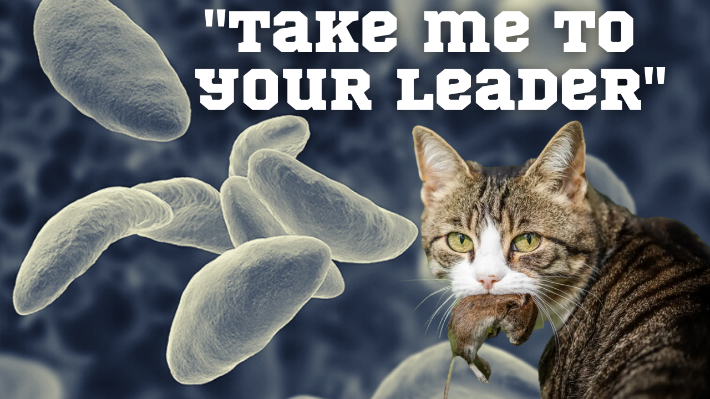

A few years ago I learned a parasite called toxoplasma gondii had the ability to make mice lose their fear of cats in order to complete its lifecycle and reproduce in a cat's intestines. That was strange, but just the beginning of the story. Last week Nature came out with a study last month that showed that wolves in Yellowstone national park are 46 times more likely to be the leasers of their packs if they they have toxoplasmosis gondii infections. That's right, a parasite has a significant impact on the social life of an entire species. I had to know more so I've spent the last few days reading up on this strange protozoa and discovered that it also makes people much more likely to be entrepreneurs, to be more attractive to the opposite sex, and to take more risks in general. I started to wonder if maybe the parasite has had an even more outsized influence on the development of human civilization, too. Perhaps the reason I'm a cat person and tend to take a lot of risks is because I got infected when I was a kid.
Watch this week's video and then go tell your cat that I say "psss pssss psss psss".